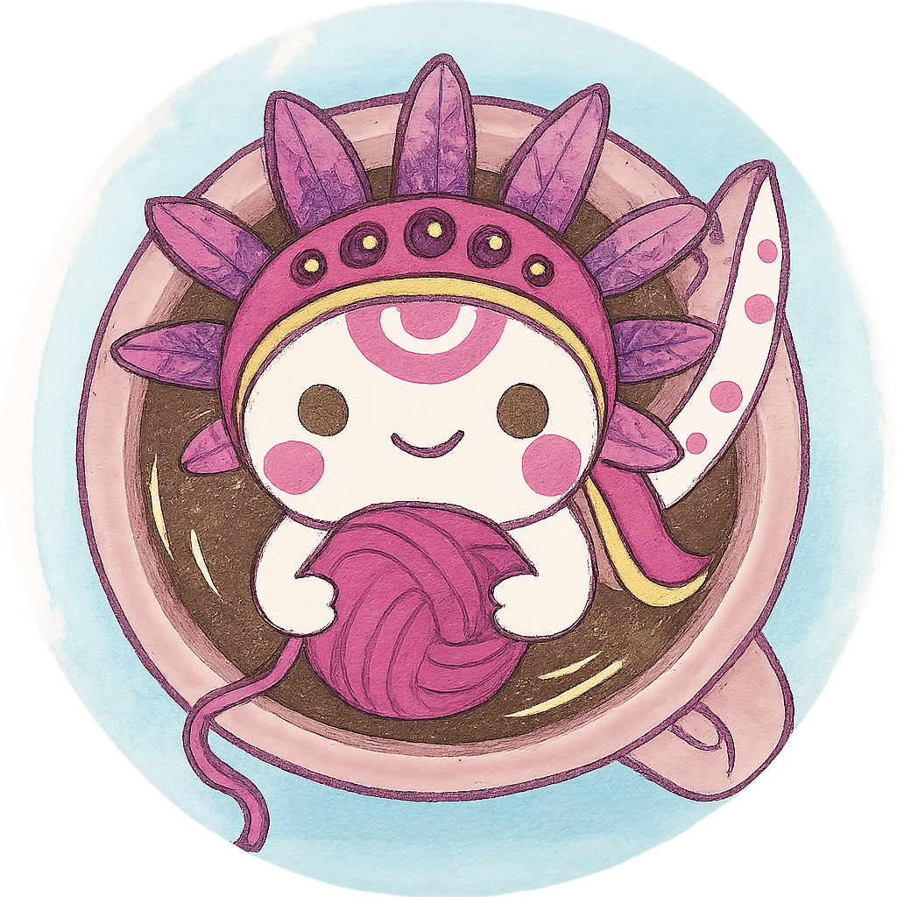
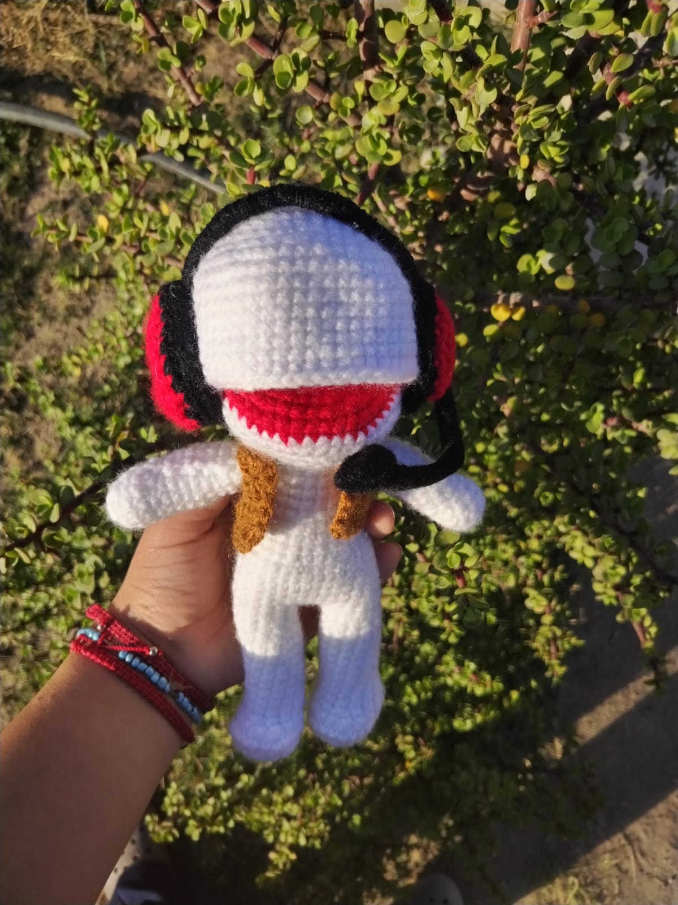
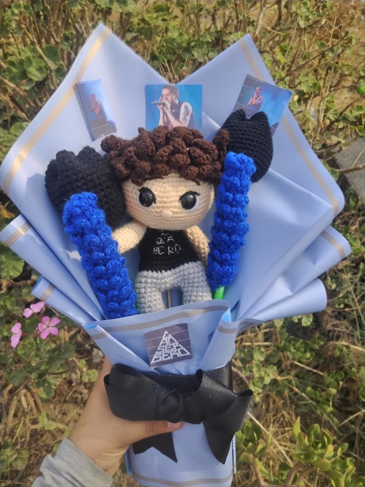

Tejidos Capuchino
🧶 Misión
Crear amigurumis tejidos con dedicación y creatividad, ofreciendo piezas únicas que transmitan ternura, calidad y calidez artesanal, llevando alegría a grandes y chicos.
🏁 Visión
Ser reconocidos a nivel nacional como la marca líder en amigurumis artesanales, distinguidos por originalidad, excelencia en detalle y compromiso sostenible.
❤ Valores
- Honestidad
- Respeto
- Responsabilidad
- Trabajo en equipo
- Solidaridad
- Pasión artesanal
- Calidez humana
Análisis FODA
| Fortalezas | Oportunidades |
|---|---|
|
|
| Debilidades | Amenazas |
|
|
🎯 Objetivos
- Aumentar las ventas online en un 30% durante el próximo semestre, aprovechando el crecimiento del mercado de productos artesanales y la alta valoración de los amigurumis personalizados.
- Reducir los costos de materiales en un 15% durante el próximo año, mediante la optimización de la cadena de suministro y la negociación con proveedores locales.
- Incrementar en un 25% el número de pedidos personalizados en el próximo trimestre, ofreciendo a los clientes la posibilidad de diseñar sus propios amigurumis a través de una herramienta interactiva en la página web.
- Aumentar la base de clientes en un 20% en el próximo semestre, enfocándose en mujeres y hombres de entre 18 y 45 años interesados en artículos personalizados y ecológicos.
- Reducir el tiempo de producción por amigurumi en un 10% en el próximo trimestre, mediante la implementación de técnicas de producción más eficientes y la capacitación del personal.
- Introducir al menos tres nuevos productos complementarios (llaveros, imanes, adornos) en los próximos seis meses, utilizando materiales reciclados y diseños innovadores.
- Aumentar la satisfacción del cliente en un 15% en el próximo trimestre, mediante la implementación de un sistema de encuestas de satisfacción y la mejora de los tiempos de respuesta a las consultas y pedidos.

Amigurumi Juanin
Precio: $499

Amigurumi Rosita
Precio: $549

Amigurumi Capuchino
Precio: $599